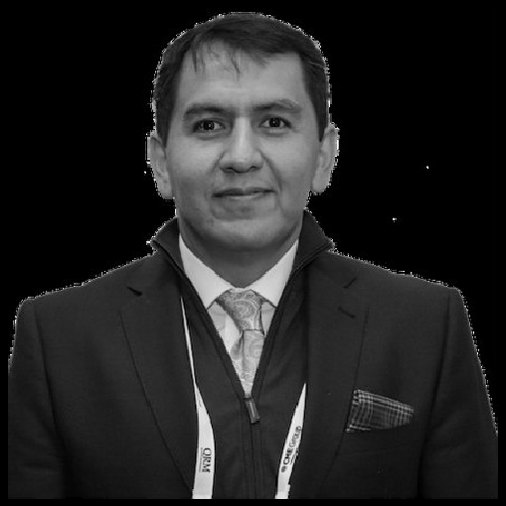

LMMJVSD
1234567891011121314151617181920212223242526I27I2829I3031
Raising the next generation of pro-business CCOs.
El objeto fundamental de toda institución crediticia es prestar con rentabilidad sobre el capital e impulsar el crecimiento económico de los países.
La palabra crédito proviene del latín credere, que significa creer y confiar, y del sustantivo creditum, aquello que se entrega en confianza. En la arquitectura financiera moderna, otorgar crédito constituye la ingeniería institucional mediante la cual una sociedad transforma la confianza en capital productivo, transfiriendo recursos en el tiempo contra una promesa verificable de flujo futuro. El objeto fundamental de toda institución de crédito es prestar, desplegar capital de manera rentable, generar retorno sostenible sobre el patrimonio (ROE y RAROC) e impulsar la actividad productiva de las familias, las empresas y los países. Los gobiernos, bancos centrales y organismos multilaterales consideran al crédito la arteria maestra del desarrollo económico porque ningún proceso de industrialización, infraestructura, movilidad social o expansión empresarial ocurre únicamente con efectivo acumulado.
El fundamento de las naciones prósperas y de las instituciones financieras líderes radica en conjugar dos mandatos inseparables: resguardar con rigor fiduciario la solvencia del balance y, simultáneamente, operar con mentalidad pro-negocio para encontrar las formas técnicas, cuantitativas y contractuales que hacen viable prestar y crecer.
Cuando el crédito se otorga sin arquitectura de resguardo, el mismo mecanismo que impulsa el desarrollo detona las crisis financieras más severas y contagia de inmediato a los mercados de deuda, liquidez, divisas y derivados; pero cuando la función de crédito pierde la vocación de negocio, contrae el balance, cede mercado y frena la economía real. Ampliar el acceso al crédito exige líderes capaces de resguardar el capital mientras encuentran cómo estructurar y aprobar nuevos negocios rentables.
De forma paralela, la metodología para evaluar y calificar a una persona física, a una PyME o a un corporativo ha cambiado de raíz, ampliando la capacidad institucional para incrementar las tasas de aprobación sin deteriorar la calidad de la cartera. Durante décadas, la industria descansó en la regresión logística clásica, la consulta estática al buró de crédito y la revisión manual de estados financieros. La analítica avanzada redefine las fronteras de originación. Los algoritmos de Machine Learning (XGBoost, LightGBM, redes neuronales), el Feature Engineering sobre datos transaccionales en tiempo real, el Open Banking, la biometría conductual y la Generative AI permiten predecir la capacidad y voluntad de pago con mucha mayor anticipación incluso cuando el historial tradicional aporta poca señal, optimizando conversión (Swap-in), tiempos de respuesta y Risk-Based Pricing bajo estándares rigurosos de Model Risk Management (SR 11-7).
Esta evolución tecnológica ha puesto de relieve el principal desafío estratégico del sector financiero: la formación del capital humano directivo. En gran parte de las fintechs, SOFOMes, SOFIPOs, financieras corporativas y bancos tradicionales, la velocidad comercial supera la velocidad con la que se consolidan las bases cuantitativas, cualitativas y de gobierno. Con frecuencia operan desconectados equipos comerciales enfocados en volumen, científicos de datos que programan algoritmos sin visión de balance, liquidez o regulación, y áreas de crédito reactivas que restringen la colocación por carecer de herramientas avanzadas de estructuración y mitigación.
El Chief Credit Officer · Global Executive Program de RiskMathics Financial Institute (21 módulos, 115 sesiones, 287.5 horas) transfiere la experiencia práctica de Chief Credit Officers que han liderado portafolios multimillonarios en expansión y en crisis, fusionándola con el dominio técnico de Data Science, AI/GenAI, IFRS 9/CECL, Basel III/IV, ICAAP y Structured Finance. Su objetivo es formar ejecutivos que comprendan a fondo el propósito económico de su institución: líderes pro-negocio y guardianes del capital, capaces de diseñar las estructuras, garantías, precios y modelos que hacen bancables los proyectos productivos, dirigir el Crisis Management bajo presión, orquestar Comités de Crédito de alto desempeño e informar con autoridad estratégica al Consejo de Administración y a los supervisores financieros.
Un programa ejecutivo que integra Data Science & GenAI, Cash-Flow & Corporate Structuring, Portfolio Engineering, IFRS 9, Basel IV Output Floor, ICAAP, Securitization, Board Reporting y un Crisis War Room final.
Formar a la siguiente generación de Chief Credit Officers, Chief Risk Officers y líderes ejecutivos del crédito: directivos que conjugan el resguardo fiduciario del balance y del capital con una clara orientación pro-negocio, comprendiendo que el objeto fundamental de toda institución crediticia es prestar, originar y escalar portafolios rentables, maximizar el valor económico ajustado por riesgo (RAROC, ROE y EVA) e impulsar el crecimiento productivo de las empresas, las familias y las economías nacionales. Al finalizar las 287.5 horas, el participante habrá trabajado en el desarrollo del criterio técnico y directivo para dirigir y supervisar el diseño, la construcción, la operación, el crecimiento, la optimización y el resguardo del sistema integral de crédito de una institución financiera o corporativa, conducir Comités de Crédito, participar en Crisis War Rooms e informar con fundamento al Consejo de Administración y al regulador.
Proteger con rigor fiduciario la solvencia del balance mientras se domina la ingeniería cuantitativa, contractual y de garantías para estructurar y viabilizar operaciones rentables.
Conecta en un solo sistema las 9 dimensiones reales de la silla del CCO: desde los datos y la originación hasta el capital regulatorio, la IA y el reporte al Consejo.
Scorecards logísticos (WOE/IV), algoritmos de ensamble (XGBoost, LightGBM), explicabilidad (SHAP), agentes con LLMs y Open Banking para maximizar el Swap-in bajo SR 11-7.
23.5% en Datos, Modelos y Originación; 20.0% en Regulación y Capital; 15.7% en Fundamentos y Retail; 14.8% en Portafolio, Colateral y Contraparte; 14.8% en Estructurados, Clima e IA; y 11.3% en Liderazgo y Crisis.
Módulos dedicados a SME/PyME Cash-Flow Lending, Corporate Credit & Internal Ratings, Commercial Real Estate (CRE) & Leveraged Lending, Collateral Haircuts y SA-CCR/xVA.
Conecta el riesgo de cada producto con IFRS 9, CECL, CNBV/CUB, reporte R04, RWA Density, Output Floor (72.5%), ICAAP y Stress Testing (CCAR/EBA) para maximizar RAROC y EVA.
Securitizations (CLOs, ABS, RMBS, CMBS) y Significant Risk Transfer (SRT) para liberar capital, junto con Collections Analytics, Workouts, venta de NPLs y diseño de AMCs.
Diseño de matrices Delegation of Authority (DOA) ágiles y seguras, conducción de comités orientados a soluciones estructuradas y presentación de Board Credit Risk Packs.
Capstone en formato híbrido (con sesiones presenciales en el Club de Industriales, CDMX y transmisión Virtual Live) donde se comanda una institución bajo un choque severo.
Impartido por 12 practitioners internacionales, con Capstones y discusión de decisiones que conectan el análisis técnico con la práctica ejecutiva.
encontrar qué garantías, Covenants y Pricing hacen bancables los proyectos productivos.
exigir, retar y auditar Scorecards, modelos ML/GenAI y motores de ECL bajo estándares SR 11-7.
conectar originación con consumo de capital (Basel IV / ICAAP), provisiones (IFRS 9 / CUB) y RAROC.
conducir decisiones bajo incertidumbre y presentar con claridad ejecutiva en el Boardroom.
Directivos y especialistas que buscan dominar la arquitectura completa del crédito en banca, fintechs, SOFOMes, SOFIPOs, financieras corporativas y reguladores.
Chief Credit Officers (CCO), Chief Risk Officers (CRO), Directores Generales (CEO) de intermediarios financieros, Deputy CCOs y Directores de UAIR.
Directores de Banca Corporativa, Banca Empresarial/PyME, Consumo/Retail, Tarjetas, Hipotecario, Automotriz, CRE, Leveraged Finance y Digital Lending.
Heads of Credit Portfolio Management, Directores de Capital (ICAAP), CFOs, Tesoreros, ALM Managers, Pricing y Contraloría (IFRS 9 / CECL).
Chief Data & Analytics Officers (CDO/CAIO), Heads of Credit Data Science, Model Developers, Model Validators (SR 11-7) y Arquitectos de MLOps.
Directores de Collections Analytics, Workouts y Reestructuras, Special Situations, Valuación de Colateral, Structured Finance y Jurídico de Crédito.
Consejeros Independientes, miembros de Comités de Crédito, Riesgos y Auditoría, Auditores Internos/Externos y Supervisores (CNBV, Banxico, CONSAR, CONDUSEF).
| Vertical institucional | Valor estratégico y de negocio para la institución |
|---|---|
| Bancos Globales (G-SIBs), G8 y Banca Mediana | Optimización de RAROC y ROE frente al Output Floor (72.5%) y restricciones A-IRB; reciclaje de balance vía SRT y Securitization; gobierno de IA bajo SR 11-7 e integración de ICAAP, IFRS 9 y Stress Testing. |
| Fintechs, Neobancos y Digital Lenders | Conversión de crecimiento en Unit Economics y CLV rentables; aprobación de segmentos Thin-File con Open Banking y ML; separación de First-Party Fraud vs. crédito y administración dinámica de líneas (CLI/CLD). |
| SOFOMes (ER y ENR) y Financieras Especializadas | Profesionalización del Operating Model, comités y DOA; estructuración en crédito empresarial mediante Cash-Flow Lending, Fideicomisos de Garantía y Covenants para acceder a banca de desarrollo y mercados. |
| SOFIPOs, Cooperativas y Credit Unions | Expansión en segmentos populares y micronegocios cuidando el NICAP y reservas regulatorias (CUOEF); transición hacia Scorecards, Decision Engines y Collections Analytics por buckets. |
| Crédito PyME, Arrendadoras y Factoraje | Evaluación del flujo real con facturación electrónica (CFDI/SAT); valuación, calibración de Haircuts y ejecución legal de activos arrendados y derechos de cobro, más Workouts oportunos. |
| Financieras Corporativas, Cautivas y Retailers | Impulso a las ventas financiadas del grupo (automotriz, departamental, club de precios) mediante originación ágil, Line Management, Risk-Based Pricing y optimización de provisiones IFRS 9/CECL. |
| Reguladores, Calificadoras y Private Credit | Supervisión técnica de modelos ML/GenAI, evaluación de ICAAP y Stress Testing, conciliación entre reporte R04, contabilidad IFRS 9 y modelos internos, y valuación de vehículos estructurados y NPLs. |
Las instituciones financieras a nivel global y latinoamericano se encuentran en un momento decisivo. La generación de directores de crédito que se formó a través de décadas de ciclos económicos está cerrando su etapa ejecutiva, mientras que la originación digital, los modelos de Artificial Intelligence y las exigencias de capital de Basel III/IV avanzan a una velocidad que el aprendizaje empírico tradicional ya no alcanza a cubrir.
Al mismo tiempo, ninguna institución puede sostener su competitividad si su función de crédito opera desconectada del objeto fundamental del negocio (prestar con rentabilidad, optimizar el retorno sobre el capital e impulsar el desarrollo económico del país), ni tampoco si persigue el crecimiento sin arquitectura cuantitativa y prudencial. Resulta indispensable consolidar un nuevo apprenticeship ejecutivo que forje a la siguiente generación de Chief Credit Officers capaces de cuidar el patrimonio institucional mientras estructuran y habilitan el crecimiento sano del portafolio. Este programa constituye esa fragua directiva.
El programa combina formación técnica, aplicación práctica y discusión ejecutiva. Desde el primer módulo los participantes se integran en equipos de 5 a 6 ejecutivos combinando perfiles de banca comercial, fintechs, SOFOMes, SOFIPOs, áreas comerciales, Data Science y reguladores. Los equipos rotan a lo largo de los bloques para que cada participante construya una red directiva de alto nivel y aprenda a estructurar decisiones bajo distintos ángulos institucionales. En cada módulo se asignan roles rotativos: Chief Credit Officer líder, estructurador pro-negocio, líder cuantitativo/modelador y segunda línea de defensa (Effective Challenger).
Cada módulo incluye tareas y ejercicios aplicados en Excel/Python y cierra con un proyecto insignia (Capstone) que el equipo construye y defiende ante un Comité de Crédito o Consejo de Administración simulado (integrado por el faculty y pares), recibiendo retroalimentación técnica y ejecutiva. Son 21 Capstones, uno por módulo, que culminan en el Módulo XXI (Executive Capstone: Crisis Command & War Room), donde los participantes comandan de principio a fin una institución bajo un choque severo de crédito y liquidez.
Cada módulo cierra con un Capstone. Abre cualquiera para ver su objetivo, su temario y sus fechas.
Módulos I a III · 18 sesiones · 45 h · 15.7% del programa
26 Oct a 8 Dic 2026
Piso cuantitativo, Operating Model ágil (DOA/RAF) y ciclo end-to-end de crédito retail y digital lending.
Medir con rigor el riesgo es la condición indispensable para expandir el negocio con confianza.
Nivelar a todos los participantes en el lenguaje cuantitativo, las métricas estadísticas y las herramientas analíticas que operan en las instituciones de crédito de clase mundial, bajo el principio de que medir con rigor el riesgo es la condición indispensable para expandir el negocio con confianza. Al concluir el módulo, el participante será capaz de leer cualquier portafolio de crédito combinando prudencia fiduciaria y visión comercial, interpretar sin ambigüedades el poder discriminante y la calibración de un modelo (PD, LGD, EAD, KS, ROC/AUC, Gini, PSI, WOE/IV), y construir curvas de Vintages y Roll Rates y Transition Matrices para detectar dónde acelerar la colocación y dónde ajustar políticas.
Portfolio Read & Executive Diagnosis
Diagnóstico cuantitativo integral de un portafolio de muestra (Vintages, Roll Rates, KS, ROC/AUC, Gini y PSI) con 3 decisiones pro-negocio y de control sustentadas ante Comité.
Lun 26 Oct · Mar 27 Oct · Jue 29 Oct · Mar 3 Nov · Jue 5 Nov · Lun 9 Nov · 2026
19:00 a 21:30 h CDMX · Virtual Live
USD $2,100 + TAX
Ver este curso por separadoUna gobernanza sólida resguarda el balance y habilita la velocidad comercial.
Diseñar y operar un sistema institucional de crédito de clase mundial: arquitectura de políticas, proceso end-to-end, documentación, Delegation of Authority (DOA), modelo de Three Lines of Defense (3LoD) y Risk Appetite Framework (RAF). El objetivo es construir una gobernanza que resguarde rigurosamente el patrimonio de la institución y, al mismo tiempo, habilite la agilidad comercial, estableciendo carriles claros de aprobación, evaluación estructurada de excepciones y trazabilidad completa ante el comité, el Consejo y el regulador.
Credit Function Blueprint & RAF
Diseño del Operating Model end-to-end, estatuto del Comité de Crédito, matriz de Delegation of Authority (DOA) y Risk Appetite Framework (RAF) con cascada operativa.
Mar 10 Nov · Mié 11 Nov · Jue 12 Nov · Mar 17 Nov · Mié 18 Nov · 2026
19:00 a 21:30 h CDMX · Virtual Live
USD $1,800 + TAX
Ver este curso por separadoDominar el ciclo Origination-to-Loss separa el crecimiento rentable de una crisis de cartera.
Dirigir y escalar de extremo a extremo el ciclo de crédito retail y digital lending (origination-to-loss) conjugando expansión comercial y resguardo del portafolio: diseñar la Unit Economics del producto, estructurar motores de decisión y Cutoffs que maximicen la aprobación de clientes solventes, administrar científicamente el ciclo de vida de las líneas (line management) y el risk-based pricing, contener el fraude de identidad y de primera parte sin frenar la conversión de buenos clientes, y operar una cobranza analítica que recupere flujo y preserve relaciones viables.
Retail Origination-to-Loss Strategy
Estrategia integral para un portafolio de tarjeta de crédito o préstamo digital: Unit Economics, Cutoffs, Line Management (CLI/CLD), Risk-Based Pricing, antifraude y Collections Analytics.
Lun 23 Nov · Mié 25 Nov · Jue 26 Nov · Lun 30 Nov · Mar 1 Dic · Jue 3 Dic · Mar 8 Dic · 2026
19:00 a 21:30 h CDMX · Virtual Live
USD $2,000 + TAX
Ver este curso por separadoMódulos IV, VI a IX · 27 sesiones · 67.5 h · 23.5% del programa
12 Ene a 29 Abr 2027
Construcción del activo rentable: Data Architecture, SME/PyME Cash-Flow, Corporate, CRE/Leveraged y Credit Scoring Models & Decisioning (fechas no consecutivas: 12 Ene – 29 Abr 2027).
The competitive edge of modern lending lives in institutional data architecture and Feature Engineering.
Design and govern an institutional credit data strategy and architecture with a dual mandate: sharpening risk measurement precision while expanding the addressable credit market. Upon completion, participants will integrate internal and external data sources, extract maximum signal from Credit Bureaus (Sociedades de Información Crediticia: Buró de Crédito & Círculo de Crédito), incorporate alternative data, electronic tax invoicing (CFDI/SAT) and Open Banking, and transform raw records via feature engineering into predictive variables that capture both ability and willingness to pay without incurring data leakage or breaching data privacy and supervisory regulations.
Credit Data Architecture & Feature Store Blueprint
End-to-end institutional design of a multi-source credit data pipeline (Credit Bureau waterfall, CFDI/SAT transactional extraction, Open Banking, and Feature Store) with data-leakage controls and Swap-in expansion metrics.
Mar 12 Ene · Jue 14 Ene · Lun 18 Ene · Mar 19 Ene · Jue 21 Ene · 2027
19:00 a 21:30 h CDMX · Virtual Live
USD $1,800 + TAX
Ver este curso por separadoStructuring the cash flows, collateral, and Covenants that make the productive backbone of the economy bankable.
Evaluate, structure, monitor, and manage SME (PyME) credit by combining fiduciary portfolio protection with the pro-business capability to engineer financial and operational structures that make productive enterprises bankable: rigorous cash-flow lending analysis, underwriting formal and semi-formal businesses through transactional data and electronic tax invoicing (CFDI/SAT), matching credit facilities to the cash conversion cycle, designing enforceable collateral and covenants, and executing timely corporate workouts.
SME Cash-Flow Structuring & Workout Case
Full underwriting of a growing SME (cash-flow reconstruction via CFDI/SAT and bank statements), facility structuring matched to the cash conversion cycle, guarantee & covenant package, and contingency Workout plan.
Jue 11 Feb · Lun 15 Feb · Mar 16 Feb · Jue 18 Feb · Lun 22 Feb · Mar 23 Feb · 2027
19:00 a 21:30 h CDMX · Virtual Live
USD $2,100 + TAX
Ver este curso por separadoConectar el análisis estratégico y estructural de default con el Internal Rating, los límites y el RAROC.
Dominar la evaluación, calificación y estructuración del crédito corporativo e institucional a nivel global: lectura estratégica del negocio y riesgos sectoriales, análisis financiero profundo de flujo y estructura de capital, prelación de deuda (seniority y subordinación estructural) y paquetes de covenants para viabilizar operaciones corporativas de gran escala resguardando al acreedor, metodologías de S&P, Moody's y Fitch, escalas de Internal Credit Rating (TTC vs. PIT), y modelos cuantitativos y estructurales de predicción de default (Altman Z-Score, Merton/KMV, Moody's RiskCalc y ML) para conectar Rating, PD, Límites y Pricing (RAROC).
Corporate Internal Rating, Covenants & RAROC Memo
Calificación interna completa de un corporativo combinando flujo libre (FFO/FOCF), prelación de deuda, Covenants, modelos cuantitativos (Altman Z-Score y Merton/KMV), límite máximo y Pricing por RAROC.
Lun 8 Mar · Mar 9 Mar · Jue 11 Mar · Mar 16 Mar · Jue 18 Mar · Lun 5 Abr · Mar 6 Abr · 2027
19:00 a 21:30 h CDMX · Virtual Live
USD $2,500 + TAX
Ver este curso por separadoDominar la ingeniería financiera y contractual donde se concentran los mayores márgenes y las crisis modernas.
Dominar el underwriting, la estructuración y el resguardo bajo estrés de dos verticales de alto margen y alta complejidad: el Commercial Real Estate (CRE) y los Leveraged Lending. Aplicar sus métricas específicas (NOI, LTV, DSCR, Cap Rate, Debt Yield, Deuda/EBITDA) y diseñar los mitigantes contractuales (reservas, aforos, coberturas de tasa, cash sweeps y covenants) que hacen viables y seguros los financiamientos inmobiliarios y las adquisiciones empresariales (LBOs) incluso ante escenarios de downturn.
CRE & Leveraged Finance Underwriting Memo
Underwriting completo de un proyecto de Commercial Real Estate (NOI, LTV, DSCR, Debt Yield y sensibilidad de Cap Rate) y de un Leveraged Loan (Deuda/EBITDA, depuración de Add-Backs y estrés de Downturn).
Jue 8 Abr · Lun 12 Abr · Mar 13 Abr · 2027
19:00 a 21:30 h CDMX · Virtual Live
USD $1,100 + TAX
Ver este curso por separadoThe CCO does not merely consume models: the CCO demands, challenges, governs, and turns them into profitable decisions.
Build, evaluate, benchmark, and govern world-class credit scoring models and points-based scorecards, and translate their outputs into profitable credit decisions.
Participants will develop the executive capability to understand and challenge model design, performance, limitations, and governance so that Chief Credit Officers and Chief Risk Officers actively direct, question, and govern scorecards and decisioning strategies rather than passively consuming their outputs.
Key learning outcomes
Scorecard Development, Out-of-Time Validation & Decisioning Strategy
End-to-end project blueprint: parameter definition (performance & sample windows), segmentation, binning, logistic scorecard construction with reject inference, out-of-time validation, cutoff optimization, and monitoring framework.
Lun 19 Abr · Mar 20 Abr · Jue 22 Abr · Lun 26 Abr · Mar 27 Abr · Jue 29 Abr · 2027
19:00 a 21:30 h CDMX · Virtual Live
USD $2,900 + TAX
Ver este curso por separadoMódulos V, X y XI · 17 sesiones · 42.5 h · 14.8% del programa
25 Ene a 24 May 2027
Optimización riesgo-retorno: Credit Portfolio Mgmt (PD/LGD/EAD, RAROC y EVA), Collateral Risk Mgmt y Counterparty/xVA (fechas no consecutivas: 25 Ene – 9 Feb y 3 – 24 May 2027).
Aprobar buenos créditos caso por caso no basta: la solvencia y el valor económico nacen a nivel portafolio.
Administrar el crédito como un portafolio dinámico bajo los estándares globales de la IACPM: medir Expected Loss (EL) y Unexpected Loss (UL), cuantificar concentraciones (HHI) y correlaciones de incumplimiento (cópulas y modelo ASRF de Vasicek), diseñar marcos estratégicos de límites, conectar cada exposición con el consumo de capital económico y la rentabilidad ajustada por riesgo (RAROC y EVA), y ejecutar estrategias activas de optimización y transferencia de riesgo que resguarden el balance mientras liberan capacidad para seguir financiando el crecimiento comercial.
Active Portfolio Optimization & RAROC Plan
Optimización integral de un portafolio institucional (EL, UL, Credit VaR, concentración HHI, correlación Vasicek, asignación de capital económico, RAROC y EVA) bajo mejores prácticas de la IACPM.
Lun 25 Ene · Mar 26 Ene · Jue 28 Ene · Mar 2 Feb · Jue 4 Feb · Lun 8 Feb · Mar 9 Feb · 2027
19:00 a 21:30 h CDMX · Virtual Live
USD $2,500 + TAX
Ver este curso por separadoProperly valued, haircutted, and legally perfected collateral unlocks deals, compresses LGD, and saves regulatory capital.
Master end-to-end Collateral Risk Management with a dual executive lens: as the patrimonial shield that protects recovery in the event of default (compressing LGD) and as the commercial structuring tool that enables credit approval, improves risk-based pricing for the borrower, and reduces Risk-Weighted Assets (RWA) under the Credit Risk Mitigation (CRM) frameworks of Basel III/IV and the CNBV.
Collateral Haircut, Enforcement & CRM Capital Policy
Design of an institutional Collateral Risk & Valuation Policy: quantitative haircut calibration, legal perfection & trust checklist, distressed LGD recovery model, and Basel III/IV CRM capital relief calculation.
Lun 3 May · Mar 4 May · Jue 6 May · Lun 10 May · 2027
19:00 a 21:30 h CDMX · Virtual Live
USD $1,400 + TAX
Ver este curso por separadoHabilitar el negocio de derivados y coberturas corporativas midiendo y capitalizando el riesgo de contraparte.
Dominar la medición, mitigación, valuación y capitalización del Riesgo de Crédito de Contraparte (CCR) y del libro de negociación (traded credit risk) para resguardar a la institución ante movimientos extremos de mercado y, al mismo tiempo, habilitar el crecimiento rentable del negocio de derivados, coberturas cambiarias (FX) y de tasas, y operaciones de financiamiento con valores (SFTs) con clientes corporativos e institucionales, aplicando métricas EPE/PFE, la metodología SA-CCR, acuerdos ISDA/CSA y ajustes CVA/xVA.
Counterparty Exposure, SA-CCR & xVA Pricing
Medición de exposición futura (RC, EE, EPE, PFE), cálculo de EAD y capital regulatorio bajo SA-CCR, ajuste de valuación CVA/xVA y mitigación de Wrong-Way Risk en un portafolio de derivados.
Mar 11 May · Jue 13 May · Lun 17 May · Mar 18 May · Jue 20 May · Lun 24 May · 2027
19:00 a 21:30 h CDMX · Virtual Live
USD $1,100 + TAX
Ver este curso por separadoMódulos XII a XV · 23 sesiones · 57.5 h · 20.0% del programa
7 Jun a 27 Jul 2027
Lo que se defiende ante Finanzas y el supervisor: IFRS 9/CECL, CNBV/CUB y reporte R04, Basel III/IV, Output Floor (72.5%), ICAAP y Stress Testing.
Donde el riesgo de crédito se convierte directamente en estado de resultados (P&L) y capital contable.
Conectar técnica, contable y estratégicamente el riesgo de crédito con los estados financieros: construir modelos de provisiones bajo IFRS 9 (ECL / NIF C-16) y US GAAP CECL (ASC 326), calibrar reglas de Staging (SICR), estructuras temporales PIT de PD/LGD/EAD, escenarios macroeconómicos prospectivos y management overlays para resguardar el balance con reservas suficientes y auditables, evitando que errores de calibración o falsos positivos en Stage 2 castiguen artificialmente el estado de resultados (P&L) y frenen el crecimiento comercial.
IFRS 9 / CECL Engine Build & Validation
Construcción y validación independiente de un motor completo de Expected Credit Loss (Staging, umbrales SICR, estructuras temporales PIT de PD/LGD/EAD, escenarios macro ponderados y Management Overlays).
Lun 7 Jun · Mar 8 Jun · Jue 10 Jun · Lun 14 Jun · Mar 15 Jun · Jue 17 Jun · 2027
19:00 a 21:30 h CDMX · Virtual Live
USD $2,100 + TAX
Ver este curso por separadoDominar el lenguaje vinculante de la CNBV: lo que el CCO firma y el supervisor inspecciona cada mes.
Dominar el marco regulatorio y supervisor del crédito en México, con énfasis profundo en la Circular Única de Bancos (CUB), las metodologías regulatorias de Calificación de Cartera de la CNBV y la arquitectura del reporte regulatorio Serie R04 (R04-C), junto con su comparativa en América Latina (Brasil, Chile, Colombia). El participante sabrá cumplir rigurosamente ante la autoridad mientras estructura expedientes, garantías y reestructuras que optimicen legalmente la constitución de reservas regulatorias y aseguren la conciliación exacta entre el R04, la contabilidad y los modelos internos.
CNBV Supervisory Review & R04 Reconciliation
Auditoría de calificación de cartera bajo la CUB, conciliación cuadrada entre el reporte Serie R04, los estados financieros y los modelos internos, e integración del expediente para inspección de la CNBV.
Lun 21 Jun · Mar 22 Jun · Jue 24 Jun · Lun 28 Jun · Mar 29 Jun · Jue 1 Jul · 2027
19:00 a 21:30 h CDMX · Virtual Live
USD $2,100 + TAX
Ver este curso por separadoOptimize RWA density and capital allocation to maximize ROE and sustain long-term balance-sheet growth.
Master the international regulatory capital architecture of Basel III and the Basel IV Endgame (Finalizing Post-Crisis Reforms) alongside its local implementation (CNBV / CUB): Risk-Weighted Assets (RWA) calculation under the Standardized Approach (SA-CR) and Internal Ratings-Based Approaches (F-IRB and A-IRB), the strategic impact of the 72.5% Output Floor, Pillar 1 vs. Pillar 2 capital buffers, and the Internal Capital Adequacy Assessment Process (ICAAP) to optimize capital allocation and maximize RAROC and ROE.
Basel IV Output Floor, RWA Optimization & ICAAP Blueprint
Full quantitative diagnosis of a bank credit portfolio under SA-CR vs. IRB, measurement of the 72.5% Output Floor capital binding constraint, ICAAP Pillar 2 add-ons, and a pro-business RWA & RAROC optimization plan.
Lun 5 Jul · Mar 6 Jul · Jue 8 Jul · Lun 12 Jul · Mar 13 Jul · Jue 15 Jul · Lun 19 Jul · 2027
19:00 a 21:30 h CDMX · Virtual Live
USD $2,500 + TAX
Ver este curso por separadoDemostrar ante el Consejo y el regulador que el balance resiste el próximo choque y sostiene al negocio.
Diseñar, modelar y ejecutar ejercicios de Enterprise Stress Testing de crédito con estándar global (CCAR / DFAST de la Reserva Federal, EBA y ejercicios supervisores de la CNBV): construcción de escenarios macroeconómicos coherentes, modelos satelitales de pérdida bajo estrés, Reverse Stress Testing e integración directa al ICAAP. El objetivo es fortalecer la resiliencia de la institución ante choques severos y, simultáneamente, dar al Consejo y al supervisor la certidumbre cuantitativa para respaldar el plan de crecimiento del negocio.
Enterprise Stress Test & Recovery Actions
Diseño de escenarios macroeconómicos (Base, Adverso y Severamente Adverso), proyección trimestral de pérdidas, provisiones, RWA e ICAP/CET1 bajo estándares CCAR/EBA, Reverse Stress Test y Management Actions.
Mar 20 Jul · Jue 22 Jul · Lun 26 Jul · Mar 27 Jul · 2027
19:00 a 21:30 h CDMX · Virtual Live
USD $1,400 + TAX
Ver este curso por separadoMódulos XVI a XVIII · 17 sesiones · 42.5 h · 14.8% del programa
9 Ago a 14 Sep 2027
La frontera estratégica: riesgo climático y transición (NGFS/SLLs), reciclaje de balance (Securitization, SRT, NPLs) e IA/GenAI gobernada (SR 11-7).
Climate is now a quantitative credit risk driver and a historic commercial opportunity in Transition Finance.
Integrate climate and ESG risks directly into the quantitative credit cycle and commercial origination strategy: translate Physical Risks (acute and chronic) and Transition Risks (policy, carbon pricing, technology shifts) into borrower cash flows, collateral valuations (LGD), and probabilities of default (PD); execute Climate Stress Testing under NGFS scenarios; comply with BCBS, EBA, and CNBV/Banxico expectations; and structure profitable Green Loans and Sustainability-Linked Loans (SLLs) that finance the industrial transition.
Climate Credit Stress Test & Transition Plan
Quantitative climate stress test of a corporate and real estate portfolio under NGFS scenarios (impact on PD, collateral LGD, and ECL) paired with the commercial structuring of a Sustainability-Linked Loan (SLL).
Lun 9 Ago · Mar 10 Ago · Jue 12 Ago · Lun 16 Ago · Mar 17 Ago · 2027
19:00 a 21:30 h CDMX · Virtual Live
USD $1,100 + TAX
Ver este curso por separadoReciclar el balance mediante Securitization y SRT para impulsar la originación, y monetizar NPLs en el Downturn.
Dominar la Securitization como herramienta estratégica para diversificar el fondeo, reciclar el balance y liberar capital regulatorio que impulse la nueva originación comercial, junto con las estrategias ejecutivas para la resolución y monetización de Non-Performing Loans (NPL Resolution). Dominar la estructuración de CLOs, RMBS, CMBS, ABS y transacciones de Significant Risk Transfer (SRT), así como los procesos de forbearance, valuación y venta de portafolios NPL, distressed debt y diseño de Asset Management Companies (AMCs).
Securitization / SRT Structuring & NPL Resolution
Estructuración de una operación de Securitization (Tranching, Waterfall y Credit Enhancement) y Significant Risk Transfer (SRT) para liberación de RWA, más estrategia Hold vs. Sell / Workout / AMC para un portafolio NPL.
Jue 19 Ago · Lun 23 Ago · Mar 24 Ago · Jue 26 Ago · Lun 30 Ago · Mar 31 Ago · 2027
19:00 a 21:30 h CDMX · Virtual Live
USD $2,100 + TAX
Ver este curso por separadoAdoptar Machine Learning, GenAI, Agentes y Real-Time Decisioning con velocidad comercial y gobernanza SR 11-7.
Dominar las tecnologías avanzadas que están transformando el crédito: AI/ML de última generación, Inteligencia Artificial Generativa (GenAI / LLMs), sistemas de Agentes de Crédito, arquitecturas de Real-Time Decisioning, Blockchain/Tokenización de activos (RWA) y preparación ante Computación Cuántica, integrándolas bajo un marco riguroso de Model Risk Management (SR 11-7 y NIST AI RMF) para acelerar radicalmente la originación, elevar la precisión analítica y escalar el negocio sin importar riesgos ocultos ni alucinaciones.
GenAI Credit Agent & SR 11-7 Governance Framework
Diseño arquitectónico de un sistema productivo de AI / GenAI / Agentes de Crédito y Real-Time Decisioning, integrado con su marco completo de validación, explicabilidad (SHAP), controles anti-alucinación y Model Governance (SR 11-7 / NIST AI RMF).
Jue 2 Sep · Lun 6 Sep · Mar 7 Sep · Jue 9 Sep · Lun 13 Sep · Mar 14 Sep · 2027
19:00 a 21:30 h CDMX · Virtual Live
USD $2,100 + TAX
Ver este curso por separadoMódulos XIX a XXI · 13 sesiones · 32.5 h · 11.3% del programa
27 Sep a 25 Oct 2027
Donde se firma y se lidera: cultura y ética crediticia pro-negocio, orquestación del Comité de Crédito, Board Reporting y Crisis War Room.
Aligning incentives, uncompromising ethics, and executive judgment to build sustainable value under pressure.
Build, measure, and sustain a high-performing Credit Culture that is both prudentially sound and commercially driven: align origination and credit teams around risk-adjusted value creation (RAROC), master the Basel Committee (BCBS) Corporate Governance Principles, eradicate conflicts of interest and insider-lending abuses, neutralize cognitive biases in credit committees, and develop the executive discipline to make firm, constructive lending decisions under uncertainty and commercial pressure.
Credit Culture, Incentive Alignment & Ethical Decision Playbook
Institutional Credit Culture diagnostic, redesign of commercial and credit compensation schemes linked to RAROC and vintage performance, and governance protocol for related-party conflicts and high-pressure credit dilemmas.
Lun 27 Sep · Mar 28 Sep · Jue 30 Sep · Lun 4 Oct · 2027
19:00 a 21:30 h CDMX · Virtual Live
USD $1,400 + TAX
Ver este curso por separadoEl módulo que justifica la palabra Chief: gobernar el Comité de Crédito y hablarle con autoridad al Consejo.
Dominar en la práctica lo que distingue a un técnico de un verdadero Chief Credit Officer: diseñar, instalar y conducir un Comité de Crédito desde cero combinando rigor fiduciario y agilidad para estructurar soluciones en operaciones viables, y presentarse ante el Consejo de Administración (Board of Directors) y el regulador con autoridad ejecutiva, articulando en el Board Credit Risk Report el crecimiento sano del portafolio, la rentabilidad sobre el capital, la suficiencia de reservas e ICAAP y el escalamiento oportuno de alertas estratégicas (red flags).
Board Credit Risk Pack & Committee Defense
Diseño del Charter del Comité de Crédito, anatomía de carpetas de caso y presentación en vivo de un Board Credit Risk Pack trimestral (crecimiento vs. RAF, RAROC, Vintages, Watchlist, IFRS 9, ICAAP y Red Flags) ante 4 consejeros y CROs en activo.
Mar 5 Oct · Jue 7 Oct · Lun 11 Oct · 2027
19:00 a 21:30 h CDMX · Virtual Live
USD $1,100 + TAX
Ver este curso por separadoLa prueba definitiva del Chief Credit Officer: comandar la institución bajo una crisis severa.
Integrar las 21 disciplinas del programa en una simulación ejecutiva en tiempo real (Crisis Command & War Room): comandar la respuesta de una institución financiera ante una crisis severa de crédito, liquidez y contagio de mercado. El participante aprenderá a resguardar de inmediato la solvencia y la liquidez del balance, ejecutar un triage quirúrgico de la cartera que cierre los focos de quebranto mientras acompaña y reestructura a los clientes productivos viables para preservar la franquicia comercial, recalibrar modelos en drift, ajustar provisiones IFRS 9/CUB y capital ICAAP, y defender el plan ante el Comité, el Consejo de Administración y el regulador.
CCO Crisis War Room & Executive Action Plan
Simulación ejecutiva multi-etapa en formato híbrido (con sesiones presenciales en el Club de Industriales, CDMX y transmisión Virtual Live): comando integral de una crisis macroeconómica, sectorial y de liquidez, ejecutando Triage de cartera, acompañamiento de clientes viables, defensa de capital ICAAP y reservas IFRS 9/CUB, resolución de NPLs y comparecencia ante Consejo y CNBV.
Mar 12 Oct · Jue 14 Oct · Lun 18 Oct · Mar 19 Oct · Jue 21 Oct · Lun 25 Oct · 2027
19:00 a 21:30 h CDMX · sesiones presenciales en el Club de Industriales (CDMX) y Virtual Live
USD $2,100 + TAX
Ver este curso por separado115 sesiones de 2.5 horas. Cada día marcado lleva la clave del módulo que se imparte. En noviembre de 2026 hay tres sesiones en miércoles.
| # | Módulo | Sesiones | Días de clase |
|---|---|---|---|
| I | Onboarding Bootcamp: Credit Risk Quant & Data Foundations | 6 | 26, 27 y 29 de octubre; 3, 5 y 9 de noviembre de 2026 |
| II | Credit Operating Model, Governance & Risk Appetite | 5 | 10, 11, 12, 17 y 18 de noviembre de 2026 |
| III | Retail Credit Risk & Digital Lending: Origination, Fraud, Collections & Loss | 7 | 23, 25, 26 y 30 de noviembre; 1, 3 y 8 de diciembre de 2026 |
| IV | Credit Data Architecture: Credit Bureaus, Alt Data & Open Banking | 5 | 12, 14, 18, 19 y 21 de enero de 2027 |
| V | Credit Portfolio Mgmt: PD/LGD/EAD, Capital & Return | 7 | 25, 26 y 28 de enero; 2, 4, 8 y 9 de febrero de 2027 |
| VI | SME/PyME Credit: Cash-Flow Lending & Workouts | 6 | 11, 15, 16, 18, 22 y 23 de febrero de 2027 |
| VII | Corporate Credit, Internal Ratings & Default Prediction | 7 | 8, 9, 11, 16 y 18 de marzo; 5 y 6 de abril de 2027 |
| VIII | Commercial Real Estate & Leveraged Lending: Underwriting & Downturn Risk | 3 | 8, 12 y 13 de abril de 2027 |
| IX | Credit Scoring Models & Decisioning | 6 | 19, 20, 22, 26, 27 y 29 de abril de 2027 |
| X | Collateral Risk Management: Valuation, Haircuts & Enforcement | 4 | 3, 4, 6 y 10 de mayo de 2027 |
| XI | Counterparty & Traded Credit Risk: CCR, SA-CCR & CVA/xVA | 6 | 11, 13, 17, 18, 20 y 24 de mayo de 2027 |
| XII | IFRS 9 & CECL: Credit Risk Modeling & Validation | 6 | 7, 8, 10, 14, 15 y 17 de junio de 2027 |
| XIII | Credit Regulation & Supervisory Reporting: CNBV/CUB, Calificación de Cartera & R04 | 6 | 21, 22, 24, 28 y 29 de junio; 1 de julio de 2027 |
| XIV | Basel III & IV: Credit Risk Capital, ICAAP & Output Floor | 7 | 5, 6, 8, 12, 13, 15 y 19 de julio de 2027 |
| XV | Enterprise Stress Testing & Scenario Design: CCAR/EBA & ICAAP | 4 | 20, 22, 26 y 27 de julio de 2027 |
| XVI | Climate & ESG Credit Risk: Transition, Physical & Climate Stress | 5 | 9, 10, 12, 16 y 17 de agosto de 2027 |
| XVII | Structured Finance, Securitization & NPL Resolution | 6 | 19, 23, 24, 26, 30 y 31 de agosto de 2027 |
| XVIII | AI & GenAI in Credit Risk: Models, Agents & Model Governance | 6 | 2, 6, 7, 9, 13 y 14 de septiembre de 2027 |
| XIX | Credit Culture, Ethics & Executive Decision-Making | 4 | 27, 28 y 30 de septiembre; 4 de octubre de 2027 |
| XX | The CCO in the Boardroom: Credit Committee Orchestration & Board Reporting | 3 | 5, 7 y 11 de octubre de 2027 |
| XXI | Executive Capstone: Crisis Command & War Room | 6 | 12, 14, 18, 19, 21 y 25 de octubre de 2027 |
Impartido por 12 practitioners internacionales, con Capstones y discusión de decisiones que conectan el análisis técnico con la práctica ejecutiva.
Former Consumer Banking CFO · International Trusted Advisor
PENFED CREDIT UNION
Módulos I · II · XII · XV
Asesor internacional con trayectoria en finanzas, Data Science y administración de riesgos. Fue Consumer Banking CFO de PenFed Credit Union y ocupó responsabilidades en Banco Azteca, Algorithmics, SAS y EY. Su práctica conecta analítica, reservas, capital y decisiones de negocio. Cuenta con formación en The University of Chicago y El Colegio de México.
Director Corporativo de Crédito, Estrategia de Cobranza y Ciencia de Datos
GRUPO COPPEL
Módulo III
Director Corporativo de Crédito, Estrategia de Cobranza y Ciencia de Datos en Grupo Coppel. Actuario por la UNAM, participó en la creación de BanCoppel y en el desarrollo de capacidades de Riesgos, Analítica y Data Science del grupo. Su experiencia abarca originación, administración de cartera y Collections Strategy.
Co-Founder and CEO
CRISKCO
Módulos IV · VI
Co-Founder y CEO de CRiskCo, enfocado en Credit Intelligence, datos transaccionales y Automated Underwriting. Antes de fundar la empresa trabajó en eloan.il, Todan y SAP. Su experiencia vincula tecnología, arquitectura de datos y evaluación de PyMEs. Cuenta con formación en Computer Science y Bioinformatics, y un MBA de Tel Aviv University.
Consultor y Consejero Independiente · Ex Director Corporativo de Administración de Riesgos
BANCO MONEX
Módulos V · XI
Consultor y Consejero Independiente, anteriormente Director Corporativo de Administración de Riesgos en Banco Monex. Su trayectoria reúne crédito, contraparte, mercado y liquidez, junto con gobierno corporativo y supervisión. Aporta una perspectiva institucional sobre límites, capital, RAROC y decisiones de portafolio.

Director de la mesa xVA (CVA, DVA y LVA)
BANCO SANTANDER MÉXICO
Módulo VII
Director de la mesa xVA de Banco Santander México, con experiencia previa en Santander Global y Banesto. Su práctica se concentra en valuación, Pricing ajustado por riesgo y Hedging. Es Doctor en Estadística Aplicada por la UNED, con formación de posgrado en Finanzas Cuantitativas y Economía Financiera.
Chief Financial Officer (CFO)
XINFRA FE (FIBRA E · BIVA)
Módulos VIII · XVII
Chief Financial Officer de Xinfra FE, con trayectoria en finanzas corporativas, financiamiento estructurado y tesorería. Ha desempeñado responsabilidades en Banobras, Metrofinanciera, Monex, HiTo Servicing e IPAB. Es Actuaria y Maestra en Ciencias con especialidad en Matemáticas Financieras por el ITAM.
Author & Global Advisor in Credit Scoring & Credit Risk
WILEY AUTHOR · GLOBAL CREDIT RISK ADVISOR
Módulo IX
Autor de Credit Risk Scorecards e Intelligent Credit Scoring, publicados por Wiley. Su trayectoria combina asesoría a instituciones financieras, desarrollo de Scorecards y estrategia de Credit Analytics. En el programa aborda el ciclo de modelación, desde la definición del proyecto hasta la validación, implementación y monitoreo.
Prudential Regulation Lead
NATWEST GROUP
Módulos X · XIV · XVI · XIX · XX · XXI
Prudential Regulation Lead en NatWest Group, con experiencia en Metro Bank, Kamakura Corporation, IFC, Fiserv, ABN AMRO y HSBC. Su práctica abarca capital, ICAAP, Model Risk, colateral y riesgo climático. Integra la perspectiva de banca, consultoría y desarrollo de mercados.
Consejero Independiente · Ex Director de Crédito y Riesgos
NACIONAL MONTE DE PIEDAD
Módulos XIII · XX · XXI
Consejero Independiente y ex Director de Crédito y Riesgos de Nacional Monte de Piedad. Ocupó responsabilidades directivas en BBVA y Banco Azteca, con experiencia en administración integral de riesgos, capital, regulación y control interno. Conecta modelos, revisión supervisora y decisiones de Comité.
Director · Ex Chief Risk Officer de INFONAVIT
NABLA SOLUTIONS
Módulo XVIII
Licenciado en Matemáticas por la Universidad de Buenos Aires y PhD por Rutgers University. Fue CRO de INFONAVIT y trabajó en Financial Risk Management en KPMG. Es Director en Nabla Solutions y faculty de RiskMathics, con especialidad en modelos cuantitativos, Machine Learning e IFRS 9.
Independent Board Director · Former CEO
BANCO MONEX Y MONEX CASA DE BOLSA
Módulo XX
Consejero Independiente y ex CEO de Banco Monex y Monex Casa de Bolsa. Su trayectoria incluye dirección bancaria, mercados de capitales, Comités de Crédito y Consejos de Administración. Es Economista por el ITAM y realizó estudios de posgrado en The University of Chicago.
Chief Risk Officer (CRO)
GRUPO FINANCIERO BANORTE
Módulos XX · XXI
Chief Risk Officer de Grupo Financiero Banorte, ex CEO de Banco Interacciones y ex President of Corporate Banking en BBVA Bancomer. Su trayectoria combina dirección bancaria, administración de riesgos, gobierno corporativo y actividad académica. Aporta experiencia en decisiones de crédito y respuesta institucional.
21 módulos · 115 sesiones · 287.5 horas Virtual Live + Capstones. Incluye el Executive Capstone: Crisis Command & War Room, The CCO in the Boardroom y la discusión de entregables con el faculty.
Ahorra USD $13,600 frente a la suma de los 6 tracks adquiridos por separado (USD $29,600).
Bloques de 3 a 5 módulos diseñados como formación ejecutiva por especialidad. Ideales para ejecutivos o equipos corporativos que buscan profundizar en un dominio específico del ciclo de crédito.
Los 6 tracks por separado suman USD $29,600. La conveniencia depende de la combinación elegida.
| Track | Módulos incluidos | Sesiones | Horas | % del programa | Inversión |
|---|---|---|---|---|---|
| A · Retail Credit & Operating Architecture | I a III (Quant Bootcamp, Operating Model & Retail/Digital) | 18 | 45 | 15.7% | USD $4,000 + TAX TarjetaPayPal |
| B · Modern Lending & Credit Scoring | IV, VI a IX (Data Architecture, PyME, Corporate, CRE/Leveraged & Credit Scoring Models · no consecutivo) | 27 | 67.5 | 23.5% | USD $7,800 + TAX TarjetaPayPal |
| C · Credit Portfolio & Counterparty Engineering | V, X y XI (Credit Portfolio Mgmt, Collateral Risk & Counterparty/xVA · no consecutivo) | 17 | 42.5 | 14.8% | USD $4,000 + TAX TarjetaPayPal |
| D · Prudential Credit Capital & Stress Testing | XII a XV (IFRS 9/CECL, CNBV/CUB/R04, Basel III/IV & Stress Testing) | 23 | 57.5 | 20.0% | USD $5,800 + TAX TarjetaPayPal |
| E · Climate, Structured Credit & AI Governance | XVI a XVIII (Climate Risk, Securitization/SRT/NPLs & AI Governance) | 17 | 42.5 | 14.8% | USD $4,000 + TAX TarjetaPayPal |
| F · Executive Credit Leadership & Crisis Command | XIX a XXI (Credit Culture, The CCO in the Boardroom & Crisis War Room) | 13 | 32.5 | 11.3% | USD $4,000 + TAX TarjetaPayPal |
| Los 6 tracks por separado | Módulos I a XXI | 115 | 287.5 | 100.0% | USD $29,600 + TAX |
Todos los precios están expresados en USD + TAX. Adquirir los 6 tracks por separado suma USD $29,600; frente a esa suma, el programa ejecutivo completo (USD $16,000) representa una diferencia de USD $13,600. Tres tracks de USD $4,000 suman USD $12,000; B + A + C suman USD $15,800. Los tracks B (IV, VI a IX) y C (V, X y XI) se cursan en ventanas no consecutivas del calendario general. Los tracks B a F también se venden como Executive Programs 2027, con folleto y página propios.
Déjanos tus datos y un asesor te contacta hoy mismo.
Sin compromiso.
Más de 100,000 profesionales formados desde 2005 · BANXICO, CNBV, AFOREs y la banca de LATAM
100% seguro · SSL · PayPal Verified · RiskMathics Financial Institute
Agenda 20 minutos con desarrollo de negocio y arma el grupo para tu equipo: fechas, formato presencial o Virtual Live y propuesta económica.